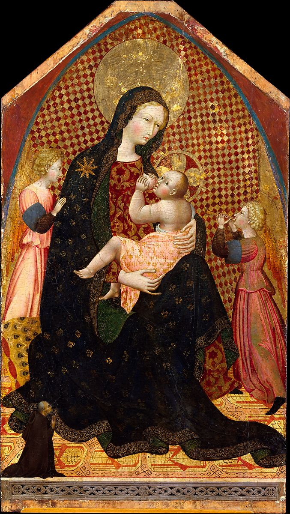

<head>
<meta charset="UTF-8" />
<meta name="keywords" content="drawing, painting" />
<meta name="description" content="drawings by Sunjy" />
<title>Sunjy</title>
<link rel="shortcut icon" type="image/x-icon" href="../../mImages/mCommon/favicon.ico" media="screen" />
<link rel="stylesheet" type="text/css" href="../../mCsses/mCommon/mCssA.css" />
<link rel="stylesheet" type="text/css" href="../../mCsses/mCommon/mCssB.css" />
<link rel="stylesheet" type="text/css" href="../../mCsses/mCommon/mCssC.css" />
<link rel="stylesheet" type="text/css" href="../../mCsses/mCommon/mCssD.css" />
<link rel="stylesheet" type="text/css" href="../../mCsses/mContent/mCssA.css" />
<link rel="stylesheet" type="text/css" href="../../mCsses/mContent/mCssB.css" />
<link rel="stylesheet" type="text/css" href="../../mCsses/mContent/mCssC.css" />
<link rel="stylesheet" type="text/css" href="../../mCsses/mContent/mCssD.css" />
</head>
<script type="text/javascript" src="../../mScripts/mContent/mContentAA.js" /></script>
<script type="text/javascript" src="../../mScripts/mContent/mContentAB.js" /></script>
<script type="text/javascript" src="../../mScripts/mContent/mContentAC.js" /></script>
<script type="text/javascript" src="../../mScripts/mContent/mContentAD.js" /></script>
<script type="text/javascript"></script> 
<script type="text/javascript">
document.write('<div class="mImgAbsolute"></div>');
/*
document.write('<p class="mFontSizeBColor" />From a white paper...</p>');
document.write('<table class="center"><tr><td>');
document.write('');
document.write('</td></tr></table>');
*/
</script>


<script type="text/javascript">
document.write('<p class="mFontSizeBColor" />Madonna and Child with Two Angels and a Donor</p>');
document.write('<p class="mFontSizeSColor" />By Giovanni di Paolo (Giovanni di Paolo di Grazia), ca. 1445. Dating from ca. 1445–50, this image was probably the center panel of an altarpiece paid for by the diminutive kneeling figure. The Virgin&#39;s humility is exalted by showing her seated on the ground, on an elaborately embroidered cushion, nursing the Christ child. The Anatolian carpet—a much valued object—is beautifully rendered.<br><br>At some point in the past the gilt background was scraped away and substituted by the modern checkered background. The haloes of the Madonna and Child are also modern, but the rest of the painting is in very good condition.</p>');
document.write('<table class="center" /><tr><td>');
document.write('<br>At some point in the past the gilt background was scraped away and substituted by the modern checkered background. The haloes of the Madonna and Child are also modern, but the rest of the painting is in very good condition." />');
document.write('</td></tr></table>');
</script>


